Comfort
La smart home funziona quando scompare.
Gli utenti non vogliono gestire un sistema: vogliono che la casa si adatti a loro, in silenzio.
Progettiamo la relazione, non il comando.
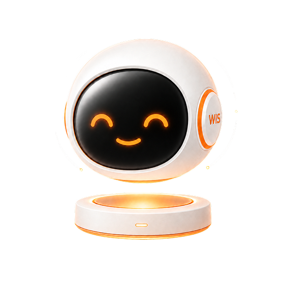
Il brief chiedeva un'assistente AI per un'app di domotica. Siamo partiti da come cambia il rapporto tra persona e casa.
Il futuro non è una casa che esegue meglio i comandi, ma una casa che collabora: comprende il contesto, agisce in autonomia e tiene chiaro il confine tra la decisione del sistema e il controllo umano.
«Non voglio controllare ogni dispositivo, voglio fidarmi.»
Andrea, 45 anni. Lavora a tempo pieno e gestisce due case: la sua e quella della madre.
Non ha tempo né voglia di seguire i dispositivi uno per uno. Vuole sapere che la casa è a posto, e intervenire solo quando serve davvero.
Gli insight della ricerca, dalle interviste agli scenari simulati.
La smart home funziona quando scompare.
Gli utenti non vogliono gestire un sistema: vogliono che la casa si adatti a loro, in silenzio.
Il risparmio non si vede, quindi non esiste.
I competitor offrono dashboard, grafici e report via mail che nessuno legge. Nessuno oggi osserva, impara e propone in automatico.
La sicurezza è fiducia.
Gli utenti vogliono sapere che qualcuno controlla la casa per loro. Un sistema che vuole essere autonomo deve prima dimostrare di essere affidabile: l'autonomia progressiva non è una feature, è una conquista.
Si parla con WIS, non con i dispositivi. Il controllo manuale resta, per chi lo vuole.
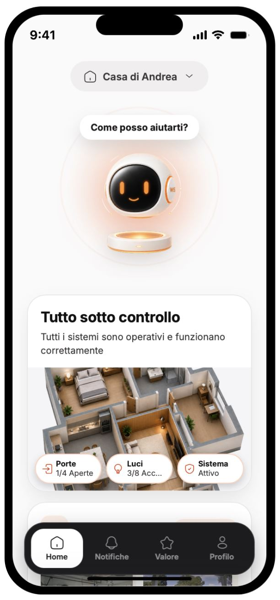
La home mostra la casa in 3D. Si tocca una stanza e si vedono subito i dispositivi attivi.
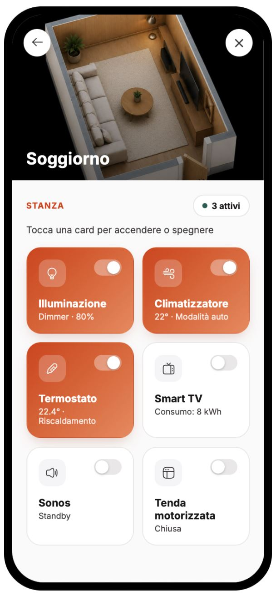
Un tocco per accendere o spegnere, senza cercare in un elenco.
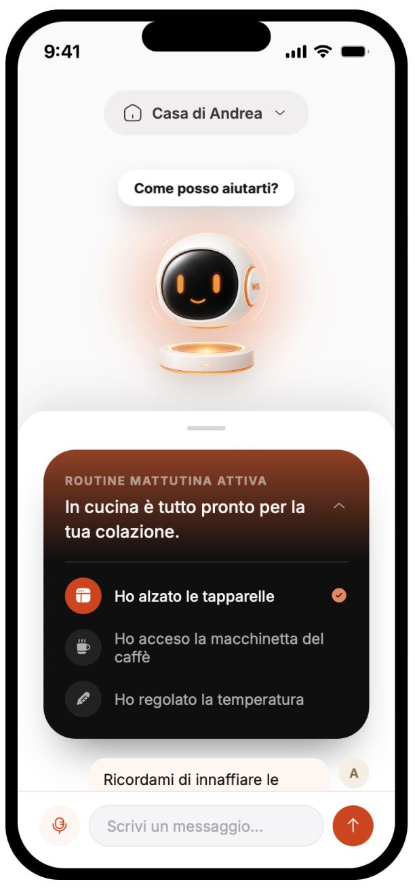
WIS dice cosa ha fatto: tapparelle, caffè, temperatura. Tutto in una conversazione.
Quando succede qualcosa di importante WIS arriva dove sei: sul polso, sulla Dynamic Island, nella Live Activity.
Suona il corriere? WIS chiede se gestire lui la consegna, e si risponde con un tocco. La notifica passa da interruzione a fonte di fiducia.
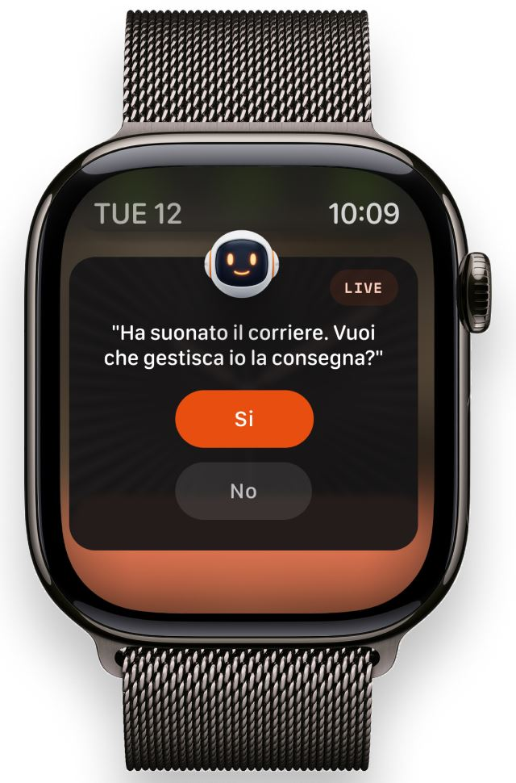
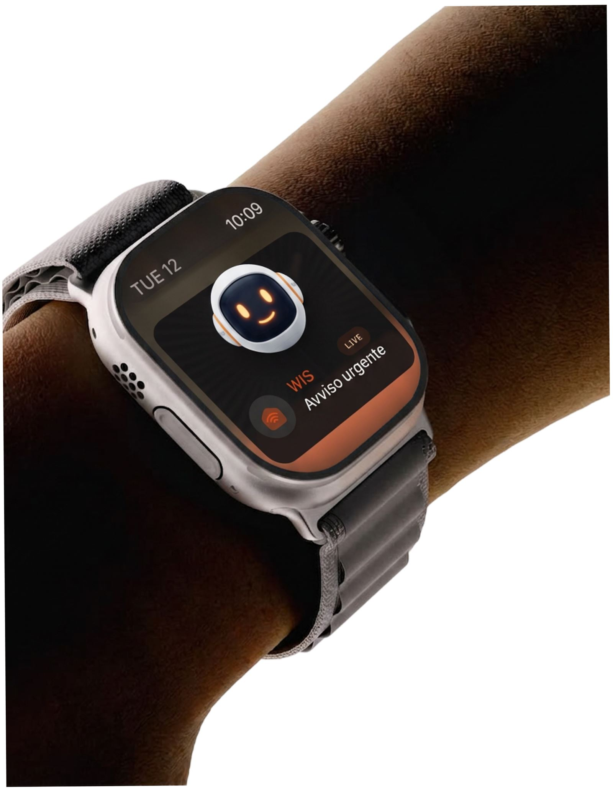
La Live Activity tiene il conto del tempo e mostra cosa WIS ha già fatto: videocamera attivata, clip registrata, un avviso se non rispondi entro un minuto.
Rispondi, ignora o apri l'app. La scelta resta a te.
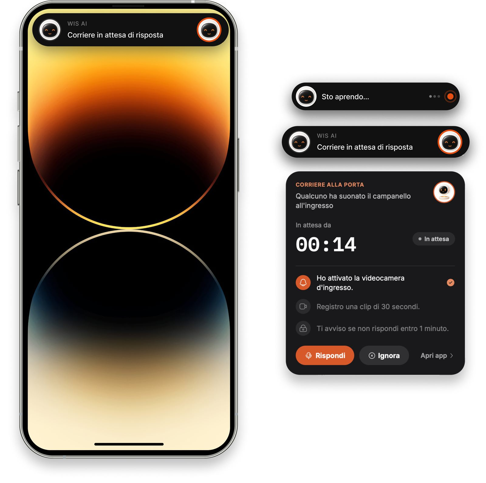
WIS distingue quello che conta da quello che ha già risolto. Le notifiche si dividono tra quello che chiede attenzione subito e quello che WIS ha già gestito da solo.
Passata l'emergenza WIS osserva, impara e suggerisce, per esempio di accendere la lavatrice alle 19 per risparmiare. Lo storico mostra tutto quello che ha fatto: trasparenza totale.
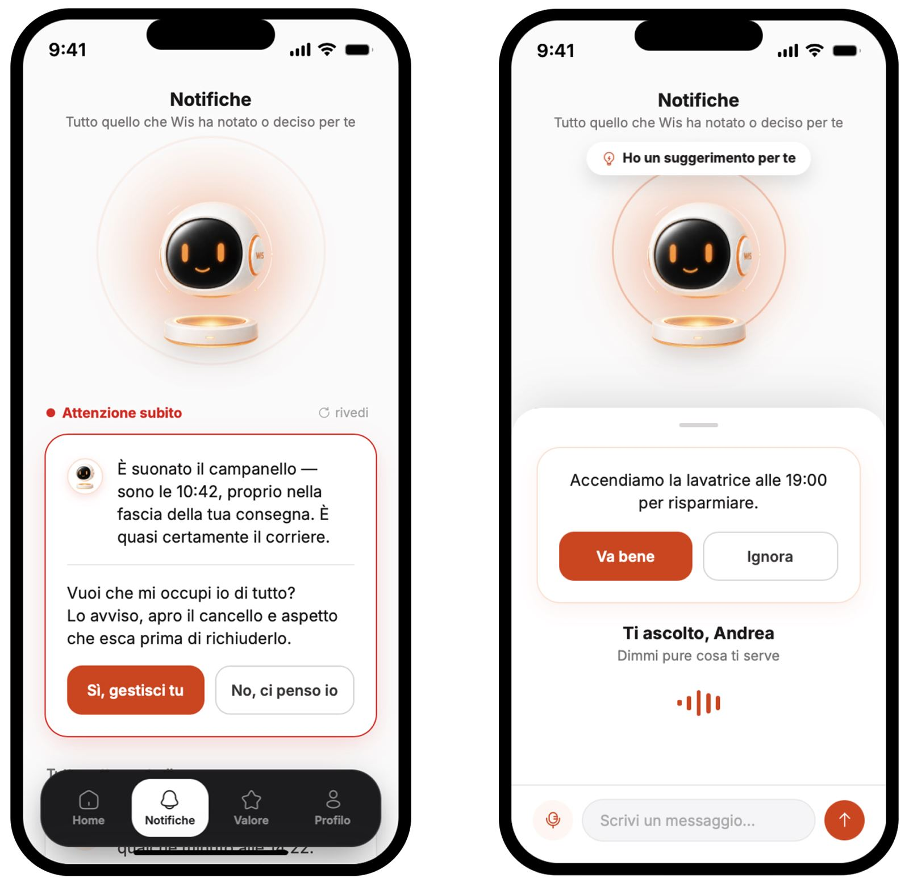
La casa restituisce valore, WIS lo rende visibile. Ogni mese un riepilogo concreto: quanto hai risparmiato e dove, su acqua, luce e gas. L'AI diventa un narratore del valore.
Il risparmio non resta un numero nascosto in un report: è la prima cosa che si vede.
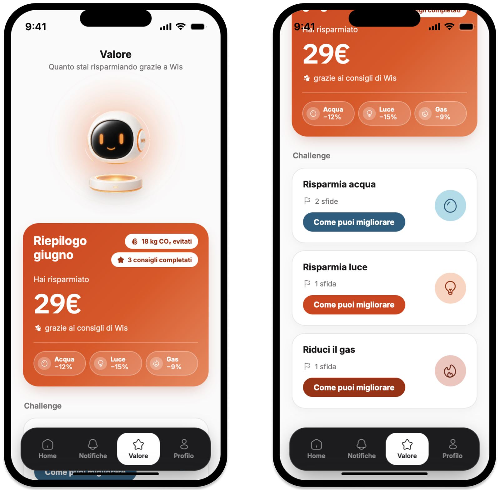
Le sfide spingono abitudini migliori su luce, clima, acqua e aria. Ognuna dice quanto vale, quanto manca e quanto si risparmia.
«Docce più brevi»: due minuti in meno, 6 € al mese, 72 € all'anno. Finita una sfida, WIS ne propone un'altra in base alle tue abitudini.
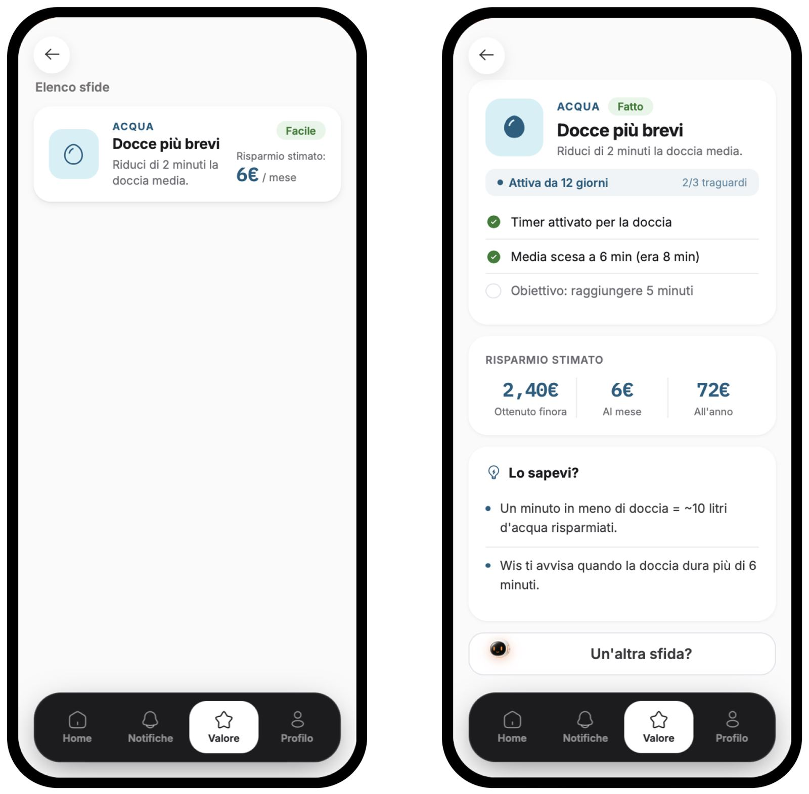
E WIS si adatta. Tre livelli di automazione, scelti dall'utente. Il controllo non sparisce mai: si delega, consapevolmente.
WIS suggerisce cosa fare, ma aspetta la tua conferma.
Gestisce le routine comuni e ti avvisa, con la possibilità di modificare.
Ottimizza comfort, consumi e sicurezza con più autonomia.
Dallo stesso profilo si gestiscono più case e più utenti. Proprio quello che serve ad Andrea.
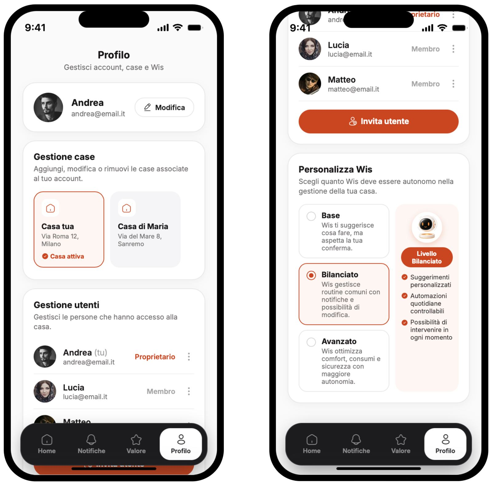
Gemini, ChatGPT e Perplexity ci hanno aiutato con il benchmark, le personas, gli scenari simulati e la sintesi dei dati.
Il design system l'abbiamo costruito in Figma e Figma Make, poi con Antigravity e Claude Code siamo arrivati a un prototipo funzionante in codice.
Nel team i ruoli UX e UI si sono scambiati spesso: così ogni scelta l'abbiamo vista da due lati.